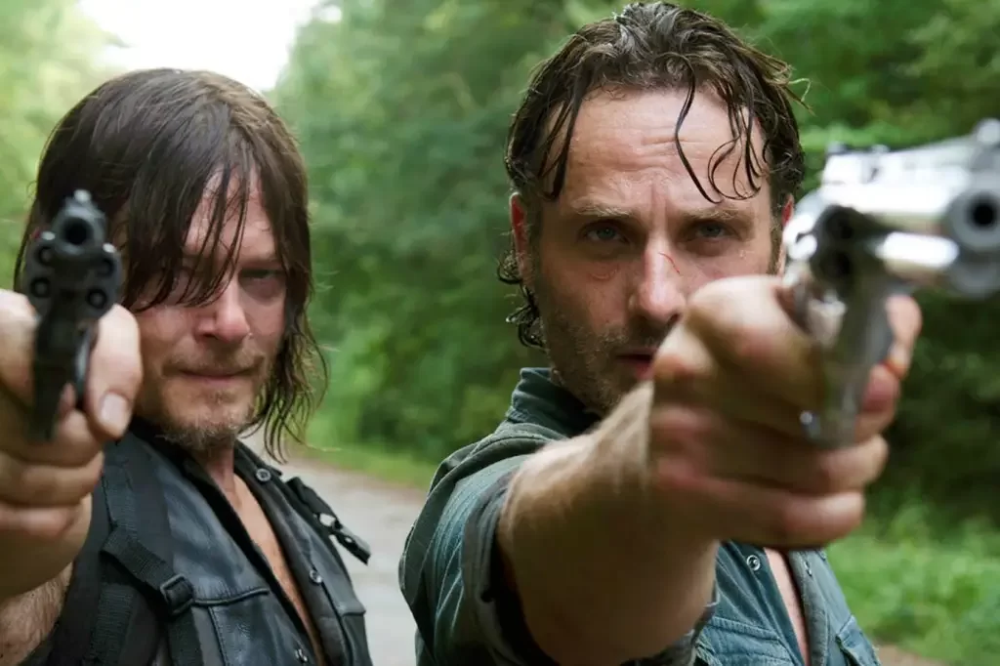
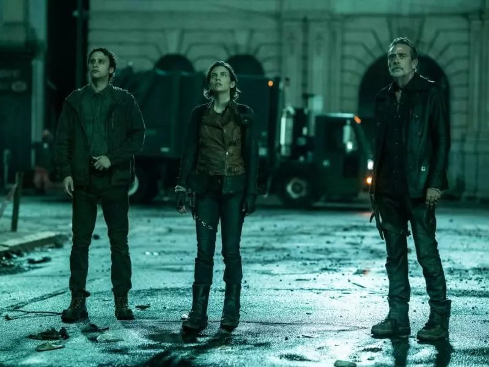
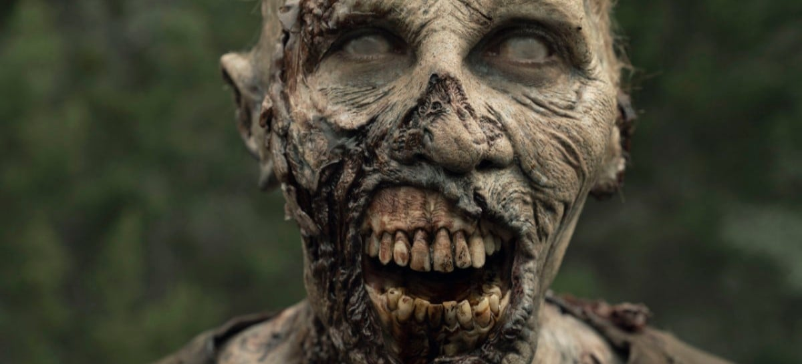
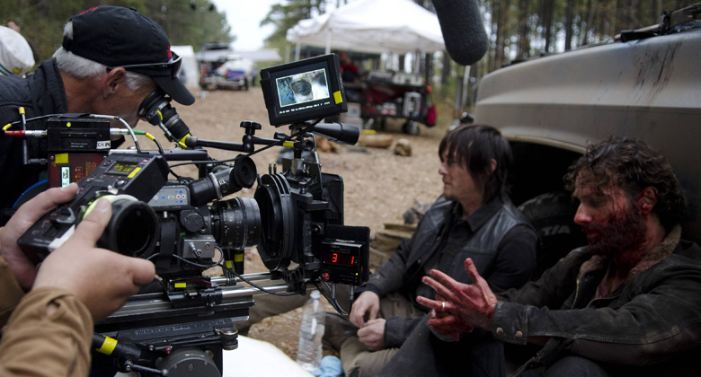

FANPAGE DE THE WALKING DEAD
Bem-Vindos a fanpage de The Walking Dead aqui você encontrará Curiosidades, Novidades, Personagens, entre outros.
| The Walking Dead é uma série de televisão dramática e pós-apocalíptica norte-americana, desenvolvida por Frank Darabont, e baseada na série em quadrinhos de mesmo nome de Robert Kirkman, Tony Moore e Charlie Adlard. A série é exibida pelo canal AMC e é protagonizada por Andrew Lincoln como o vice-xerife Rick Grimes da primeira à nona temporada. Após a saída de Lincoln, a série passou a ser protagonizada pelos veteranos de elenco, Norman Reedus e Melissa McBride. |
 |
 |
A série estreou em 31 de outubro de 2010 exclusivamente no canal a cabo AMC nos Estados Unidos e internacionalmente através do Fox Networks Group e Disney Media and Entertainment Distribution. A décima primeira e última temporada estreou em 22 de agosto de 2021 e terminou em 20 de novembro de 2022. |
|  |
| The Walking Dead teve sua produção realizada pela AMC Studios dentro do estado norte-americano da Geórgia, com a maioria das filmagens ocorrendo nos grandes espaços ao ar livre do Riverwood Studios perto de Senoia, Geórgia. A série foi adaptada dos quadrinhos por Frank Darabont, que também atuou como showrunner na primeira temporada. No entanto, conflitos entre Darabont e AMC forçaram sua saída da série. Seguindo Darabont, Glen Mazzara, Scott M. Gimple e Angela Kang serviram como showrunners. |
| Durante sua terceira temporada, The Walking Dead atraiu o maior número de espectadores de 18 a 49 anos de qualquer série de televisão a cabo ou aberta, embora a audiência diminuiu nas temporadas posteriores. Além disso, a série foi recebida positivamente pela crítica. Foi indicada a vários prêmios, incluindo o Golden Globe Award de melhor série dramática e o Writers Guild of America Award de Nova Série. |
| A AMC também desenvolveu outras mídias relacionadas com a série, incluindo a série spin-off Fear the Walking Dead (2015–presente) e The Walking Dead: World Beyond (2020–2021), bem como vários episódios para web e videogames. Quatro outros spinoffs foram anunciados, como duas séries sem título: uma com Daryl e outra com Rick e Michonne, The Walking Dead: Dead City com Maggie e Negan, e uma série de antologia, Tales of the Walking Dead, para apresentar histórias de personagens individuais. |
 |
Sinopse
The Walking Dead conta a história de um pequeno grupo de sobreviventes em um mundo pós-apocalíptico cheio de mortos-vivos. A série apresenta a excessiva jornada do grupo liderado por Rick Grimes, em busca de suprimentos e refúgios seguros. Além disso, os sobreviventes têm que lidar com dilemas morais, sentimentos confusos e desafios do dia a dia em um mundo hostil e praticamente dominado por mortos-vivos.
Filmagens
|  |
| The Walking Dead estreou na mesma semana em 120 países. Como parte de uma campanha expansiva para anunciar e aumentar a expectativa para a estreia, AMC e Fox International Channels coordenaram um evento de invasão de zumbis em todo o mundo em 26 de outubro de 2010. A façanha envolveu a invasão de 26 grandes cidades em um período de 24 horas, começando com Taipei e Hong Kong e terminando em Los Angeles para a estreia nos Estados Unidos. |
| Bonecos de personagens da série foram criados para lançamento em novembro de 2011 e continuaram ao longo dos anos com oito formações. As figuras, que são fabricadas pela McFarlane Toys, são projetadas para se parecerem com os atores da série. Figuras criadas para se assemelhar aos personagens desenhados na história em quadrinhos foram lançadas em setembro de 2011. |